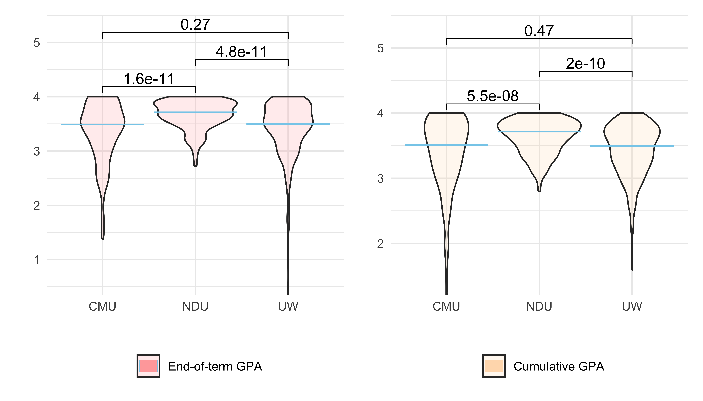
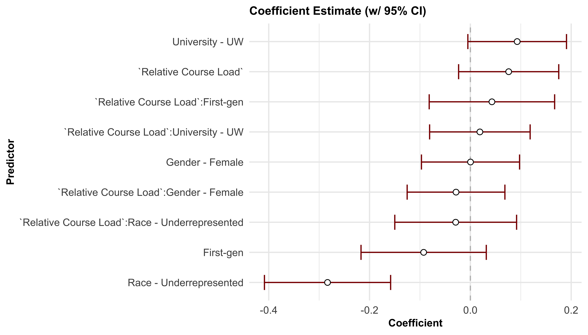

U Up? Sleep and GPA of First-Year College Students
Group Members: Kate Colvin (kac2301), Yuying Lu (yl5839), and Chhiring Lama (cyl2159)
Motivation
Student lack of success and under-performance in college is a large waste of human capital and money. It is widely known that student academic success depends on a number of factors, including regular sleep habits. Our goal in this study is to better understand how first-year GPA is impacted by sleeping behavior, while controlling for multiple demographic factors across three distinct universities. Additionally, understanding how demographic factors are related to sleeping behavior can provide guidance to universities on how to allocate resources to student behavioral health initiatives to best improve student success.
Finally, as previous undergraduates, current graduate students, and potentially future educators, understanding how sleeping behavior impacts academic performance is a personally compelling topic.
Initial Questions
Initially, our proposed project was to study how the lifestyle habits of college students impacted their duration and quality of sleep. As we researched further into this topic, we found a greater amount of real-world data available covering sleeping behavior and academic performance, which pushed us to instead look at sleeping behavior as a predictor of GPA.
Our primary questions heading into this project were:
- How are course load and GPA distributed in different gender, race, educational background and colleges?
- What are the main sleeping patterns seen in students over multiple measures of sleeping behavior?
- What can we learn about the relationship between academic performance, demographic characteristics, and sleeping habits in first-year college students? Can academic performance be predicted using these variables?
As we explored the data further, several additional questions came up regarding the variables relationships with each other and how the structure of the study may impact our results:
- How is course load related to GPA overall, and in various demographic sub-groups?
- How are different sleeping behaviors related to each other? How will this inform our regression models?
- How important are the characteristic differences of the three universities recruited in this study (Carnegie Mellon, Notre Dame, and University of Washington)? Will this change what demographic and sleeping variables are most predictive of GPA?
Data
We found our data from the Carnegie Mellon University Statistics and Data Science Data Repository. This data was originally collected from 2016-2019 for the 2023 study described in our “Related Work” section above. For this study, they recruited first-year students from three distinct American universities, Carnegie Mellon University, The University of Washington, and Notre Dame University. Data on sleeping behavior was collected from FitBits that were given to recruited students, and demographic and academic data was collected directly from the universities.
More information on how data collection was conducted and the final data set itself can be found on this page.
sleep_df <- read_csv("data/cmu-sleep.csv") |>
janitor::clean_names() |>
mutate(demo_race = case_when(demo_race == 0 ~ "Underrepresented",
demo_race == 1 ~ "Non-underrepresented"),
demo_race = fct_relevel(demo_race, "Non-underrepresented"),
demo_gender = case_when(demo_gender == 0 ~ "Male",
demo_gender == 1 ~ "Female"),
demo_gender = fct_relevel(demo_gender, "Male"),
demo_firstgen = case_when(demo_firstgen == "0" ~ "Non-first gen",
demo_firstgen == "1" ~ "First-gen",
TRUE ~ NA),
demo_firstgen = fct_relevel(demo_firstgen, "Non-first gen"),
time_collection = case_when(cohort == "lac1" ~ "Spring, 2018",
cohort == "lac2" ~ "Spring, 2017",
cohort == "nh" ~ "Spring, 2016",
cohort == "uw1" ~ "Spring, 2018",
cohort == "uw2" ~ "Spring, 2019"),
university = case_when(cohort == "lac1" ~ "CMU",
cohort == "lac2" ~ "CMU",
cohort == "nh" ~ "NDU",
cohort == "uw1" ~ "UW",
cohort == "uw2" ~ "UW"))For the exploratory analyses, we utilized the full data set, which contains 634 students. Cleaning the data involved several steps. First, all demographic variables (race, gender, and first-generation status) were encoded in 0s and 1s, so we used the data dictionary to replace the values in these columns with the correct labels. Next, we created two new variables to help us explore different sub-groups of the data set:
university: Out of the three university,NDU = Notre Dame University,CMU = Carnegie Mellon UniversityandUW = University of Washington. This information is derived fromstudyvariable as1and5were from Carnegie Mellon University,2and3from University of Washington, and4from Notre Dame University.time_collection: It refers to the time of data collection, derived fromstudyvariable. The value4instudywas is forSpring 2016,5forSpring 2017,1,2forSpring 2018, and3forSpring 2019.
We also noticed that there were several variables with a handful of
missing values. There are less than 5 missing entries for each of our
demographic variables, but notably, we are missing all course load
information (term_units, zterm_units_zof_z)
for students recruited from Notre Dame, which make up 147 of our 634
total observations. Rows with these missing values were removed when
course load information was required for our exploratory analyses, and
course load information variables were not included in our regression
models.
Exploratory Analysis
Our exploratory analysis is broken into two main sections: student data and sleeping patterns.
Exploratory Analysis: Students
student_sleep_df <- sleep_df |>
rename(`University` =`university`,
`Race` =`demo_race`,
`Gender` =`demo_gender`,
`First-Generation` =`demo_firstgen`,
`Relative Course Load`= `zterm_units_zof_z`,
`End-of-term GPA` = `term_gpa`,
`Cumulative GPA` = `cum_gpa`)
plot_gpa <- function(demo, gpa, var_equal, comp) {
subset_df <- student_sleep_df |>
drop_na(rlang::sym(demo), rlang::sym(gpa))
max_y <- max(subset_df[,gpa], na.rm = TRUE)
y_positions <- seq(max_y, by = 0.5, length.out = length(comp))
cols <- c("End-of-term GPA" = "#ffaaaa",
"Cumulative GPA" = "#ffddba")
subset_df |>
ggplot(aes(x = get(demo), y = get(gpa), fill = gpa)) +
geom_violin(alpha = 0.2) +
labs(y = "", x = "", fill = "") +
scale_y_continuous(expand = c(0,0), limits = c(min(subset_df[,gpa]), max(y_positions) + 0.5)) +
#facet_wrap(~academic_info, ncol = 3, scales = "free") +
theme(panel.spacing = unit(1, "lines")) +
scale_fill_manual(values = cols) +
stat_compare_means(aes(label = paste0("p = ", p.format)), method = "t.test",
paired = FALSE, comparisons = comp,
method.args = list(var.equal = var_equal),
p.adjust.method = "bonferroni",
label.y = y_positions) +
stat_summary(fun = "median", fun.min = "median", color = "skyblue",
fun.max= "median", size= 0.2, geom = "crossbar")
}All of the graphs and analyses mentioned in this segment can be found on our Students page. Among students from different universities, proportion of underrepresented students were not significantly different.
Our analysis of course load and GPA data provided valuable insights into the relationship between demographics and academic performance. First, we observed no significant differences in course load across various demographic groups, as measured by an independent t-test. Mean relative course load is near 0, meaning they have average course load. This indicates that students from different demographic backgrounds and universities generally maintained similar course loads. However, we did find that students from underrepresented racial groups had significantly lower GPAs compared to their well-represented peers (independent t-test, p = 0.0022). Additionally, first-generation students exhibited lower term GPAs than their non-first-generation counterparts (p = 0.00069). Notably, students from NDU had higher GPAs than those from CMU (p = 1.6e-11) and UW (p = 6e-11). The term and cumulative GPAs’ distribution are both negatively-skewed. Median GPAs are between 3 to 4, variable within this range for different groups.
Race
demo_name = "Race"
comp = list(c("Underrepresented", "Non-underrepresented"))
plot_gpa(demo = demo_name, "End-of-term GPA", FALSE, comp) +
plot_gpa(demo = demo_name, "Cumulative GPA", FALSE, comp)Gender
demo_name = "Gender"
comp <- list(c("Male", "Female"))
plot_gpa(demo = demo_name, "End-of-term GPA", TRUE, comp) +
plot_gpa(demo = demo_name, "Cumulative GPA", TRUE, comp)
First-Generation
demo_name = "First-Generation"
comp <- list(c("Non-first gen", "First-gen"))
plot_gpa(demo = demo_name, "End-of-term GPA", TRUE, comp) +
plot_gpa(demo = demo_name, "Cumulative GPA", TRUE, comp)
University
demo_name = "University"
comp = list(c("CMU", "NDU"), c("NDU", "UW"), c("CMU", "UW"))
plot_gpa(demo = demo_name, "End-of-term GPA", FALSE, comp) +
plot_gpa(demo = demo_name, "Cumulative GPA", FALSE, comp)
We used multiple linear regression to model relative effects of demographics and course load on term GPA. After controlling for race, gender, university, and first-generation college status, course load was found to have no significant effect on GPA (p = 0.133). Given that course load did not vary significantly across student groups, did not show a meaningful association with term GPA, and that Notre Dame University (NDU) lacked relevant data on course load, we excluded this variable from our final statistical analyses.
We found that underrepresented students had GPAs 0.72 points lower than their peers from well-represented racial backgrounds, suggesting that race may be a critical predictor of GPA outcomes (p = 1.08e-05). However, first-generation college status did not have a direct effect on GPA once the interplay with other factors was accounted for. Further analysis revealed that first-generation students in our study were disproportionately from underrepresented racial backgrounds and were predominantly enrolled at the University of Washington (UW) (See Appendix B in student data). This concentration may help explain the initial GPA differences observed among first-generation students before adjusting for these overlapping factors.
We examined whether students’ GPAs improved within individual demographic groups. Interestingly, the changes were minimal and not statistically significant (See Section Improvement in GPA in student data). This was true across all groups, indicating that the term GPA did not vary significantly from cumulative GPA during their first year.
Coefficient Estimate
model <- lm(`End-of-term GPA` ~ `Relative Course Load`*Race +
`Relative Course Load`*`Gender` +
`Relative Course Load`*`First-Generation` +
`Relative Course Load`*`University`,
data = student_sleep_df)
res <- bind_cols(broom::tidy(model), confint(model, level = 0.95))|>
mutate(term= str_replace(term, "RaceUnderrepresented", "Race - Underrepresented"),
term= str_replace(term, "GenderFemale", "Gender - Female"),
term= str_replace(term, "`First-Generation`First-gen", "First-gen"),
term= str_replace(term, "UniversityUW", "University - UW")) |>
select(term, estimate, `2.5 %`, `97.5 %`) |>
filter(term != "(Intercept)")
res |>
mutate(term = fct_reorder(term, estimate, sort)) |>
ggplot(aes(x = term, y = estimate)) +
geom_hline(yintercept = 0, linetype = "dashed", color = "grey") +
geom_errorbar(aes(ymin = `2.5 %`, ymax = `97.5 %`),color = "darkred", width = 0.5)+
geom_point(size = 2, shape = 21, fill = "white") +
theme(plot.title = element_text(size = 10, face = "bold"),
axis.title = element_text(size = 9, face = "bold")) +
labs(y = "Coefficient", x = "Predictor",
title = "Coefficient Estimate (w/ 95% CI)", color = "") +
coord_flip()
Statistics
model |>
broom::tidy() |>
mutate(term= str_replace(term, "RaceUnderrepresented", "Race - Underrepresented"),
term= str_replace(term, "GenderFemale", "Gender - Female"),
term= str_replace(term, "`First-Generation`First-gen", "First-gen"),
term= str_replace(term, "UniversityUW", "University - UW")) |>
rename(`SE` = `std.error`) |>
mutate(estimate = round(`estimate`, digits = 3),
`SE` = round(`SE`, digits = 3),
statistic = round(`statistic`, digits = 3)) |>
mutate(`p.value` = signif(`p.value`, digits = 3)) |>
knitr::kable(digits = 170) |>
row_spec(2, background = "darkgrey") |>
kable_minimal()| term | estimate | SE | statistic | p.value |
|---|---|---|---|---|
| (Intercept) | 3.403 | 0.049 | 69.481 | 0.00e+00 |
Relative Course Load
|
0.076 | 0.051 | 1.504 | 1.33e-01 |
| Race - Underrepresented | -0.283 | 0.064 | -4.449 | 1.08e-05 |
| Gender - Female | 0.000 | 0.050 | 0.006 | 9.95e-01 |
| First-gen | -0.093 | 0.063 | -1.466 | 1.43e-01 |
| University - UW | 0.093 | 0.050 | 1.865 | 6.28e-02 |
Relative Course Load:Race - Underrepresented
|
-0.029 | 0.061 | -0.474 | 6.36e-01 |
Relative Course Load:Gender - Female
|
-0.028 | 0.049 | -0.576 | 5.65e-01 |
Relative Course Load:First-gen
|
0.043 | 0.063 | 0.675 | 5.00e-01 |
Relative Course Load:University - UW
|
0.019 | 0.051 | 0.372 | 7.10e-01 |
Exploratory Analysis: Sleep
All of the graphs mentioned in this segment and further in-depth explanations can be found on our Sleeping Patterns page.
At the bottom of this section are plots of the overall distributions of each of the four sleep metrics, stratified by university. Two of the metrics, “Total Sleep Time” and “Sleeping Midpoint”, are roughly normally distributed. The two other metrics, “Variability in Sleep Time” and “Daytime Sleep” are both very right skewed distributions. For all metrics, distributions are very similar between each university, but for each metric, at least one university is statistically significantly distinct from the others (see the “Statistics” tab below).
To look at the relationships between these metrics, we constructed a Pearson correlation coefficient table that indicates that several of the sleep behavior variables are correlated with each other. First, sleeping midpoint and bedtime variability are positively correlated (0.41), which makes sense, since more sporadic sleeping schedules are commonly explained by staying up late. Additionally, total sleep time has a moderate negative correlation with daytime sleep (-0.29) and sleeping midpoint (-0.33). This also makes sense, as we would expect that longer nighttime sleep would lead to less time sleeping during the day and likely an earlier bedtime. These relationships helped informed our regression analyses, which is discussed below in the “Additional Analysis” portion.
Interesting patterns were also found between these metrics and the demographic and academic variables included in this data set. On a heat map of GPA and course load, we found that “Total Sleep Time” increased with greater GPAs and decreased with greater course loads, and that “Sleeping Midpoint” became earlier as GPA increased. These were not entirely expected results, as we initially thought that less sleep and later sleeping midpoints may be correlated with a higher GPA, and that students may be staying up late to study. Since this is not the case, it appears that getting less sleep and sleeping later may instead be interfering with student academic performance.
Between different gender, race, and first-generation statuses, minimal differences were found between sleeping behaviors. “Sleeping Midpoint” and “Daytime Sleep” were the only variables with statistically significantly different medians. For gender, we found that men tended to have later sleeping midpoints (a pattern found within each of the three universities individually), and that students of underrepresented races or who were first-generation tended to have greater daytime sleep.
Again, please see the Sleeping Patterns page for all of the data visualizations that go along with these results.
Total Sleep Time
plot_totalsleep <- sleep_df %>%
ggplot(aes(x = total_sleep_time, fill = university, color = university)) +
geom_density(alpha = 0.3, linewidth = 1) +
labs(x = "Total Sleep Time (minutes)", y = "Density") +
theme_minimal() +
theme(
strip.text = element_text(size = 14),
plot.title = element_text(size = 16, face = "bold", hjust = 0.5)
)
plot_totalsleep 
Variability in Bed Times
plot_bedtime2 <- sleep_df %>%
ggplot(aes(x = bedtime_mssd, fill = university, color = university)) +
geom_density(alpha = 0.3, linewidth = 1) +
labs(x = "Mean Successive Squared Difference", y = "Density") +
xlim(c(0,2.5))+
theme_minimal() +
theme(
strip.text = element_text(size = 14),
plot.title = element_text(size = 16, face = "bold", hjust = 0.5)
)
plot_bedtime2
Sleeping Midpoint
plot_midpoint <- sleep_df %>%
ggplot(aes(x = midpoint_sleep, fill = university, color = university)) +
geom_density(alpha = 0.3, linewidth = 1) +
labs(x = "Midpoint Sleep (minutes past 11 PM)", y = "Density") +
theme_minimal() +
theme(
strip.text = element_text(size = 14),
plot.title = element_text(size = 16, face = "bold", hjust = 0.5)
)
plot_midpoint
Daytime Sleep
plot_daysleep <- sleep_df %>%
ggplot(aes(x = daytime_sleep, fill = university, color = university)) +
geom_density(alpha = 0.3, linewidth = 1) +
labs(x = "Daytime Sleep (minutes)", y = "Density") +
theme_minimal() +
theme(
strip.text = element_text(size = 14),
plot.title = element_text(size = 16, face = "bold", hjust = 0.5)
)
plot_daysleep
Statistics
sleep_df %>% select(total_sleep_time, bedtime_mssd,
midpoint_sleep, daytime_sleep, university) %>%
tbl_summary(
by = university,
statistic = list(
all_continuous() ~ "{median} ({p25}, {p75})",
all_categorical() ~ "{n} / {N} ({p}%)")) %>%
add_p() %>%
add_overall()| Characteristic | Overall N = 6341 |
CMU N = 2081 |
NDU N = 1471 |
UW N = 2791 |
p-value2 |
|---|---|---|---|---|---|
| total_sleep_time | 400 (367, 430) | 394 (359, 422) | 384 (351, 420) | 409 (385, 439) | <0.001 |
| bedtime_mssd | 0.14 (0.07, 0.29) | 0.17 (0.10, 0.39) | 0.12 (0.07, 0.22) | 0.13 (0.06, 0.28) | <0.001 |
| midpoint_sleep | 388 (345, 438) | 421 (372, 468) | 381 (346, 414) | 371 (327, 423) | <0.001 |
| daytime_sleep | 35 (23, 51) | 25 (18, 40) | 40 (26, 54) | 40 (27, 58) | <0.001 |
| 1 Median (Q1, Q3) | |||||
| 2 Kruskal-Wallis rank sum test | |||||
Additional Analysis
If you undertake formal statistical analyses, describe these in detail
Discussion
What were your findings? Are they what you expect? What insights into the data can you make?